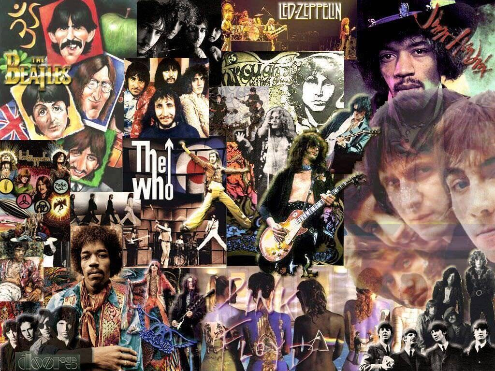
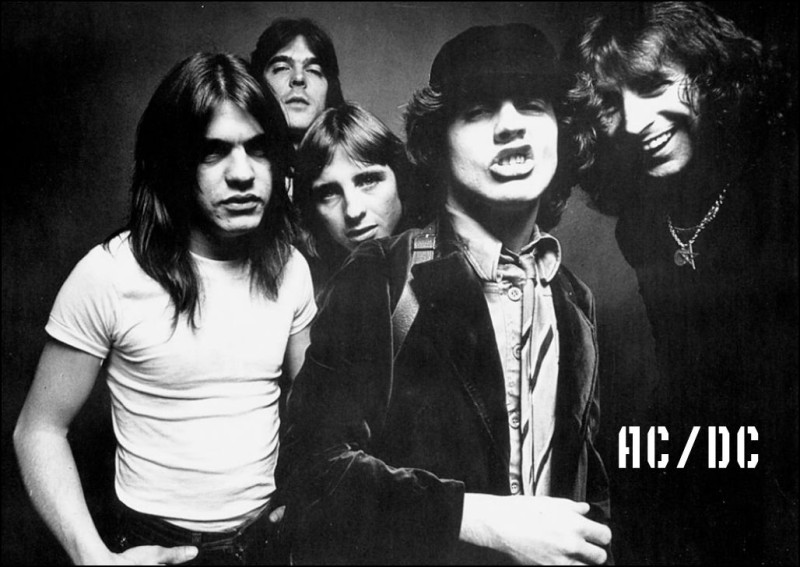
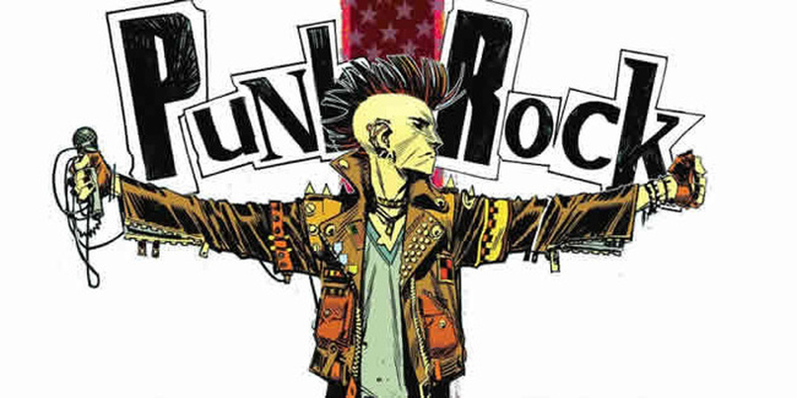
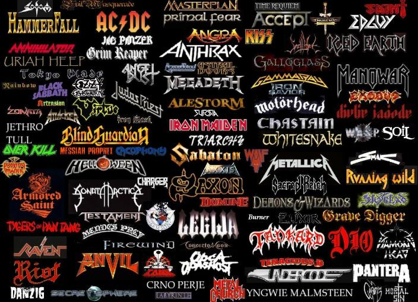
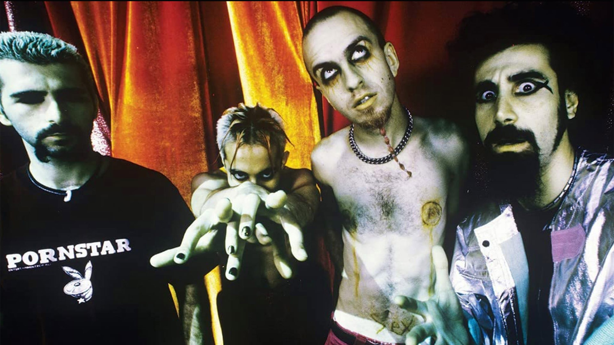
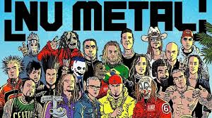
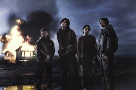
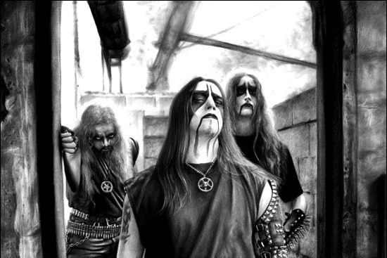

Классический рок

Классический рок — это не столько строго определённый музыкальный жанр, сколько радиоформат и собирательный канон, охватывающий золотую эпоху рок-музыки примерно с середины 1960-х до начала 1980-х годов. В этот период формируется не только музыкальный язык рока, но и его культурная идентичность: меняется подход к концертам, появляется культ рок-звезды, усиливается роль студийной записи как самостоятельного искусства. Ядром направления стали такие группы, как The Beatles, The Rolling Stones, Led Zeppelin, Pink Floyd, The Doors и Queen. Для классического рока характерны выразительные гитарные риффы, аналоговое звучание, сложные аранжировки и тексты, отражающие дух контркультуры, социальные изменения и философские поиски эпохи.
Хард-рок

Хард-рок — жанр рок-музыки, сформировавшийся во второй половине 1960-х годов в Великобритании и США как более тяжёлое и энергичное развитие блюз-рока. Он отличается насыщенным, плотным звучанием, построенным на перегруженных гитарных риффах, мощной ритм-секции и выразительном вокале. Важную роль играет сценическая подача: хард-рок активно развивал идею масштабных концертов и шоу. Ключевыми фигурами стали Led Zeppelin, Deep Purple, Black Sabbath, AC/DC и Queen, оказавшие огромное влияние на развитие металла и тяжёлой музыки в целом.
Панк-рок

Панк-рок — жанр, возникший в середине 1970-х годов как протест против усложнения и коммерциализации рок-музыки. Он стал не только музыкальным, но и культурным движением, основанным на идеях независимости и отрицания мейнстрима. Панк отличается минимализмом, высокой скоростью, агрессией и предельной прямолинейностью. Музыка строится на простых аккордах и коротких композициях, а тексты затрагивают социальные, политические и личные темы. Основные представители: Ramones, Sex Pistols, The Clash и Dead Kennedys.
Хэви-метал

Хэви-метал — жанр, сформировавшийся на рубеже 1960–1970-х годов, который стал более тяжёлым и мрачным развитием хард-рока. Он характеризуется высокой громкостью, плотными гитарными риффами, сложными соло и особой эстетикой, связанной с мифологией, фантазией и философскими темами. Метал быстро приобрёл глобальную популярность и породил множество поджанров. Основоположниками считаются Black Sabbath, Deep Purple и Led Zeppelin, чьё влияние определило звучание тяжёлой музыки на десятилетия вперёд.
Альтернативный рок

Альтернативный рок — широкое и разнообразное направление, получившее распространение с 1980-х годов как альтернатива коммерческому мейнстриму. Он объединяет множество поджанров, включая гранж, инди-рок, пост-панк и брит-поп, и отличается стремлением к экспериментам и индивидуальности. Прорыв произошёл в начале 1990-х, когда такие группы, как Nirvana, Pearl Jam, Oasis и Blur, вывели альтернативную музыку в массовую культуру и изменили представление о популярной музыке.
Нью-метал

Ню-метал — поджанр, возникший в середине 1990-х годов, объединивший тяжёлый металл с элементами хип-хопа, электроники и фанка. Он отличается ритмичными гитарными партиями, пониженным строем, акцентом на грув и разнообразием вокальных техник — от рэпа до агрессивного скриминга. Жанр стал одним из самых популярных направлений конца XX века. Среди ключевых представителей — Korn, Deftones, Limp Bizkit, Slipknot и Linkin Park.
Металкор

Металкор — жанр, возникший в конце 1980-х — 1990-х годов, объединяющий агрессию хардкор-панка с технической сложностью металла. Он отличается контрастом между тяжёлыми и мелодичными частями, использованием брейкдаунов, а также сочетанием скриминга и чистого вокала. Металкор стал одной из ключевых сцен 2000-х годов и оказал влияние на современную тяжёлую музыку. Среди известных групп — Killswitch Engage, Parkway Drive и Bring Me the Horizon.
Альтернативный метал
Альтернативный метал — жанр, возникший в середине 1980-х годов как экспериментальное направление, объединяющее тяжёлый металл с альтернативным роком и другими стилями. Он отличается нестандартными структурами, сложными ритмами и широким спектром влияний — от фанка до индустриальной музыки. Этот жанр часто ориентирован на поиск нового звучания и разрушение традиционных рамок. Ключевые исполнители: Faith No More, Tool, Rage Against the Machine и Deftones.
Дэткор
Дэткор — экстремальный поджанр, сформировавшийся в конце 1990-х — начале 2000-х годов, объединяющий брутальность дэт-метала с ритмической структурой металкора. Он характеризуется максимально тяжёлым звучанием, использованием бласт-битов, брейкдаунов и экстремальных вокальных техник. Музыка дэткора часто направлена на создание интенсивного и агрессивного звукового опыта. Пионеры жанра — Despised Icon, Suicide Silence, Whitechapel и Carnifex.
Блэк метал

Блэк-метал — экстремальный жанр, сформировавшийся в начале 1990-х годов в Скандинавии и ставший одним из самых атмосферных направлений тяжёлой музыки. Он отличается сырым звучанием, быстрыми тремоло-риффами, бласт-битами и характерным скриминговым вокалом. Важную роль играет эстетика — сценический образ, философия и идеология. Тексты часто связаны с мифологией, оккультизмом и анти-религиозными темами. Среди ключевых фигур — Mayhem, Burzum, Darkthrone, Immortal и Emperor.